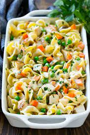

Chicken Noodle Casserole

Chicken Noodle Casserole is a delicious pasta dish that is simple and easy to make.
- Serves 9x13" pan
- Prep Time: 15 minutes
- Cook Time: 30 minutes
Ingredients
- 1 - 2 chicken breasts - cooked
- 1 can of cream of chicken
- 1 can of cream of celery or cream of mushroom (your preference)
- 1/2 cup of sour cream
- 1 bag of egg noodles or pasta of choice
- 8 oz of shredded cheddar cheese
Cooking Instructions
- Boil noodles till cooked, then strain
- Cut up cooked chicken breast
- Mix all ingredients minus cheese together and place in 9x13" pan
- Sprinkle cheese over top of mixed ingredients in pan
- Bake at 350F for 30 minutes until cheese is melted
Just a small note, you can either buy chicken breast and cook it yourself at home but if you would rather save time, buying some already made chicken breast from
your local deli will save time and taste great.
Home